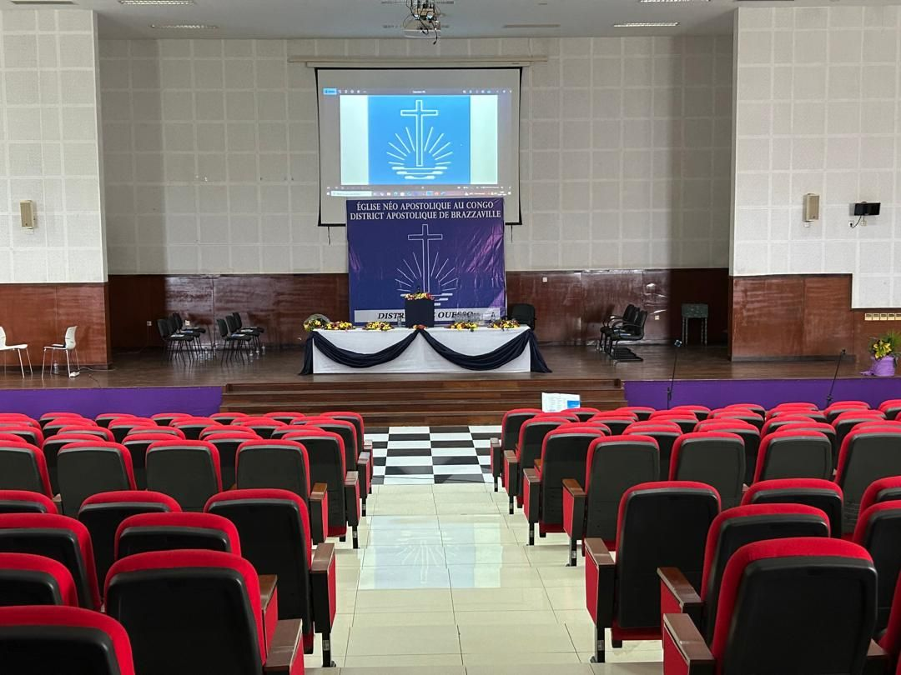

À propos de l'Église
Notre Église
L'Église Néo-Apostolique est une communauté chrétienne internationale. À Brazzaville et dans tout le Congo, nous vivons la foi dans l'unité, la paix et le service de notre prochain, en nous appuyant sur la Bible et le ministère apostolique.
Historique au Congo et à Brazzaville
Présente au Congo depuis des décennies, l'Église Néo-Apostolique s'est enracinée à Brazzaville et dans d'autres villes. Elle accompagne les familles à travers les cultes, les sacrements et les activités pour la jeunesse, dans le respect des traditions et de l'identité congolaise.
Mission, vision et valeurs
Mission
Annoncer l'Évangile de Jésus-Christ, préparer les croyants à Son retour et dispenser les sacrements dans la foi apostolique, afin que chacun puisse vivre une relation vivante avec Dieu.
Vision
Une Église unie, accueillante et rayonnante : un foyer spirituel où chaque génération trouve sa place et grandit dans la foi, l'espérance et l'amour.
Valeurs
Foi en Jésus-Christ, amour du prochain, unité fraternelle, engagement dans la prière et le service, et fidélité à la Parole de Dieu.